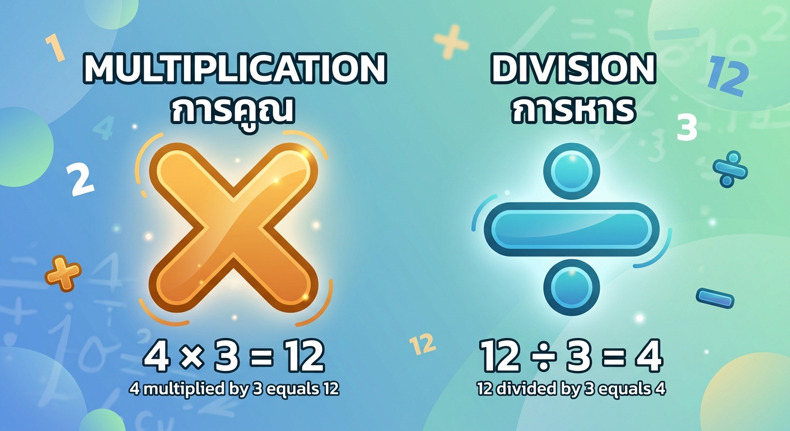

การคูณและการหาร (Multiplication & Division)

การคูณ (Multiplication)คือ การบวกจำนวนที่เท่ากันซ้ำๆ หลายครั้ง เพื่อความรวดเร็วเราจึงใช้การคูณแทนตัวอย่าง: $3 \times 4$ หมายถึง มี 3 บวกกัน 4 ครั้ง ($3 + 3 + 3 + 3 = 12$)องค์ประกอบ: ตัวตั้ง $\times$ ตัวคูณ $=$ ผลคูณคุณสมบัติสำคัญ: การคูณมีคุณสมบัติการสลับที่ เช่น $3 \times 4 = 12$ และ $4 \times 3 = 12$ การหาร (Division) คือ การแบ่งจำนวนหนึ่งออกเป็นกลุ่ม กลุ่มละเท่าๆ กัน (เป็นการตรงกันข้ามกับการคูณ)ตัวอย่าง: $12 \div 4$ หมายถึง มีของ 12 ชิ้น แบ่งออกเป็น 4 กลุ่ม กลุ่มละเท่าๆ กัน จะได้กลุ่มละ 3 ชิ้นองค์ประกอบ: ตัวตั้ง $\div$ ตัวหาร $=$ ผลหารความสัมพันธ์กับการคูณ: ถ้า $3 \times 4 = 12$ แล้ว $12 \div 4 = 3$ หรือ $12 \div 3 = 4$ข้อควรระวัง: การหารไม่มีคุณสมบัติการสลับที่ และ ห้ามใช้ 0 เป็นตัวหาร เด็ดขาด